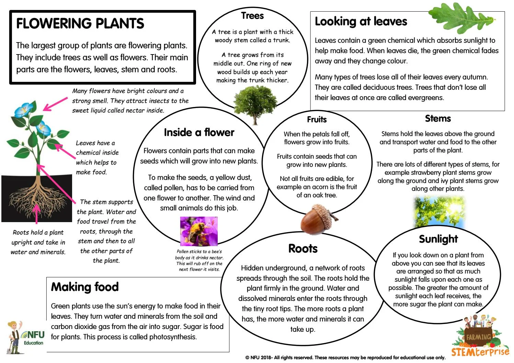

Welcome To An Ode To Flowers!
A website for flower lovers everywhere, An Ode To Flowers focuses on four different flowers and provides information on how to grow. Enjoy your stay, and don't forget to stop and smell the flowers!

×